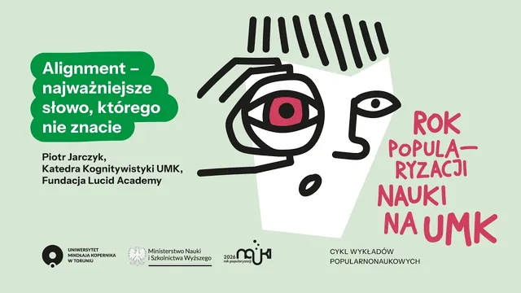
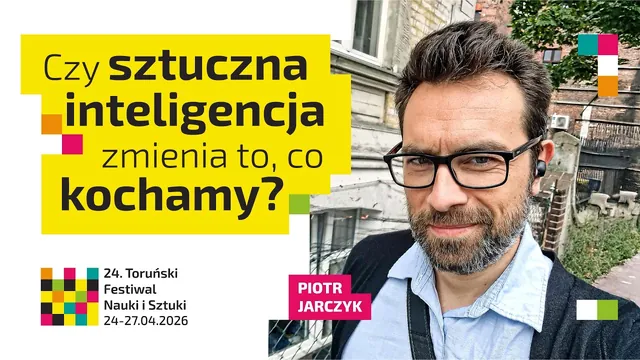
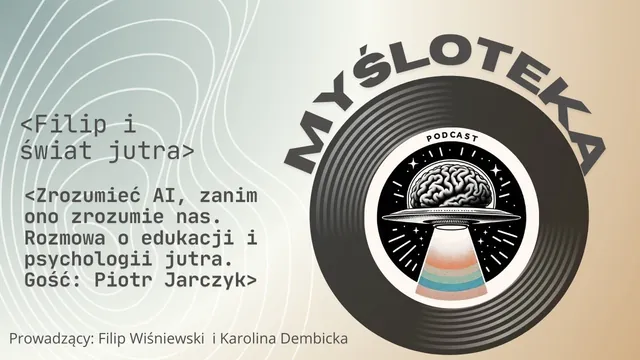
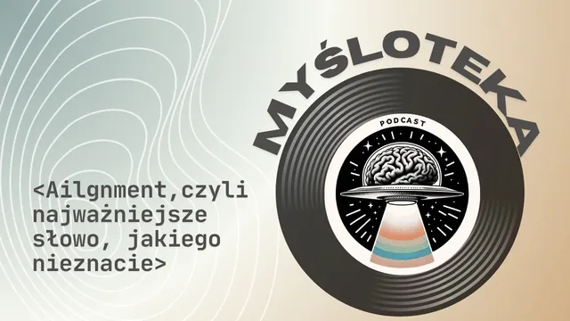
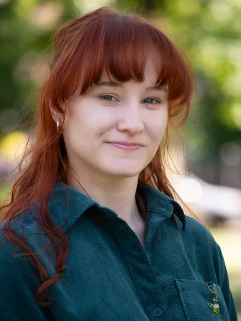
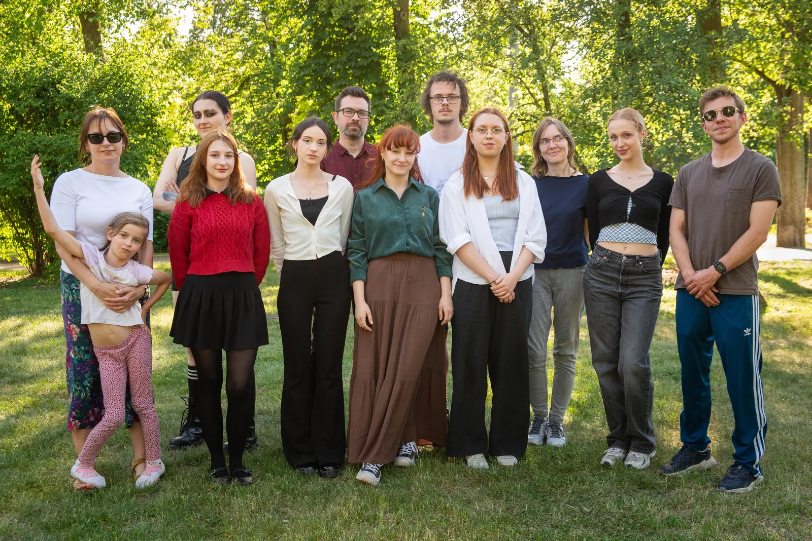

lecture
00 · lucid academy
We tailor each programme to the group, from people who are just starting to work with AI to teams that use it every day. We teach how to use the tools, how they work and where their capabilities end.
01 · mission
Lucid Academy is a foundation that provides education about artificial intelligence and runs cultural and civic projects. We teach people to use AI tools responsibly: checking the results, aware of the limitations and with their own use cases in mind.
pillar 1
Training sessions and lectures for schools, public offices, NGOs and residents, based on sound knowledge of what the tools can and cannot do.
pillar 2
Digital tools for local events and initiatives: guides to neighbourhood festivals, city games and maps. In these projects, technology serves social and cultural goals.

02 · university and training
We work most closely with the cognitive science department. Our courses are also taken by psychology students and are on the list of university-wide electives. We have also worked with the university’s Open University as part of the European YUFE alliance.
Three strands of our courses
We support the most active participants in their further development with Lucid Flow microgrants, mentoring in the Lucid Academy Sensei programme and LA Journeys community meetings.

The recordings are in Polish. On YouTube you can turn on automatic subtitles and have them translated into English (Settings → Subtitles → Auto-translate).

lecture

lecture

podcast

podcast
“Add more hours of these exercises (workshops).”
“Add more meetings/editions ;)”
“And if you’re thinking about a follow-up, I’d be happy to join :D”
03 · services
We provide education and advisory services for public institutions, local governments, schools, NGOs and local communities.

01 · core area
We train seniors, young people, educators, public-sector staff, local leaders and residents. We adapt the format, length and level to the needs of the group: from a single lecture to a series of workshops.
Alongside hands-on exercises, we explain how the tools work, because that knowledge stays relevant longer than any particular version of an app.
02
Vibe coding means building digital tools in dialogue with AI: participants describe the features they need and the model produces a working prototype. In our workshops, people build tools that respond to specific needs of neighbourhoods, schools and cities.
03
We run public consultations, participatory budgets, citizens’ panels and debates. We use AI tools where they improve the quality of the process: analysing submissions, visualising data and making materials more accessible.
04 · where we’ve been
05 · what we build
We build digital tools together with institutions and teach teams to develop them on their own. Selected examples below; the tools themselves are in Polish.
06 · team
Our team brings together people from academia, the technology sector and civil society organisations.
founder and president
A lawyer by training, he has also completed five years of psychology studies. For more than three years he has been running training sessions and lectures on artificial intelligence for a wide range of groups: seniors, residents of smaller towns, educators, public-sector staff, students and local leaders.
At Nicolaus Copernicus University he teaches AI courses of his own design in the Department of Cognitive Science. He founded Lucid Academy in 2025 to give worthwhile educational and social projects a permanent organisational base, so that their results can last.
piotr.jarczyk.ai@gmail.com
She is a fifth-year psychology student at UMK, and art and people are the two things that make her happiest. At Lucid Academy she looks after culture: she comes up with and co-creates events where people can meet, feel something real and simply have a good time.
She also runs workshops on artificial intelligence for children, adults and seniors. She wants everyone in the room to feel seen and heard, because she believes that mindfulness helps us live everyday life more fully, including when we learn together. She takes great pleasure in building websites, tools and games in the spirit of vibe coding.
After hours she sings, finds her place in the theatre and looks for freedom in nature.
What he could create used to be limited by the barrier of JavaScript or Python. With AI, he brings his abstract visions and ideas to life — from websites to apps that make everyday life easier.
At Lucid Academy he focuses mainly on vibe coding and on teaching about the latest developments in AI, and during workshops he experiences a real sense of flow. Away from the arcana of AI, he likes to switch off with a book, anime or football.

As an IT technician and cognitive science student, he combines an interest in technology with curiosity about people. At Lucid Academy he supports workshops and develops projects through vibe coding. He used to write code line by line; today he tells AI what to build — the rest is negotiation.
He wants to help others understand the changes under way, believing that technology should serve people and should not distance them from what really matters. Away from the digital world, he finds energy and balance in sport and in being close to nature.

07 · contact
Get in touch about training, joint projects and partnerships for educational and cultural events.
contact details
Lucid Academy
Piotr Jarczyk — founder and president
piotr.jarczyk.ai@gmail.com+48 693 10 70 10
registration details
Registered office: ul. Hieronima Derdowskiego 3/9, 87-100 Toruń, Poland
We prepare each quote individually, depending on the format, the audience and the scope of work.